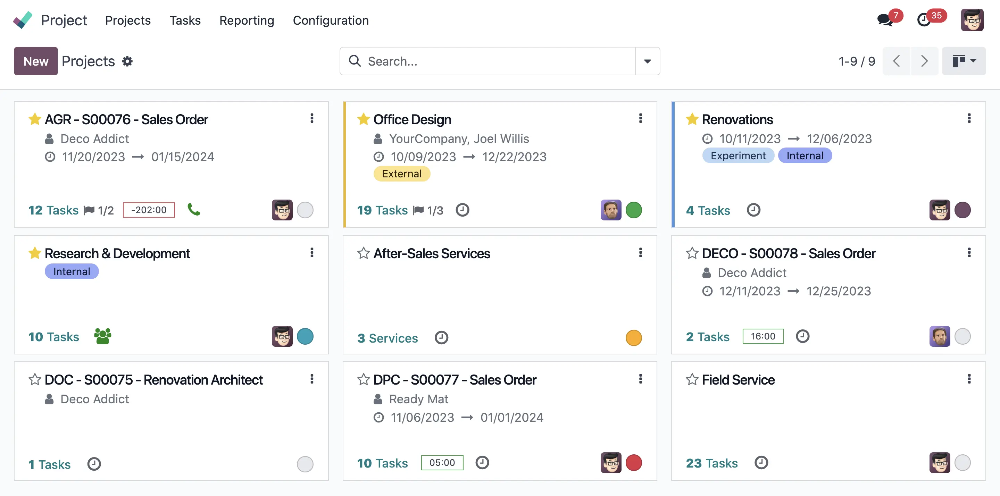
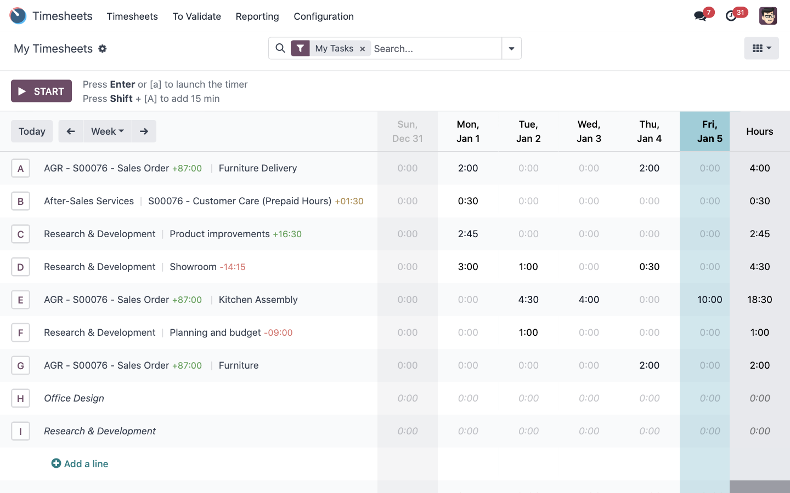
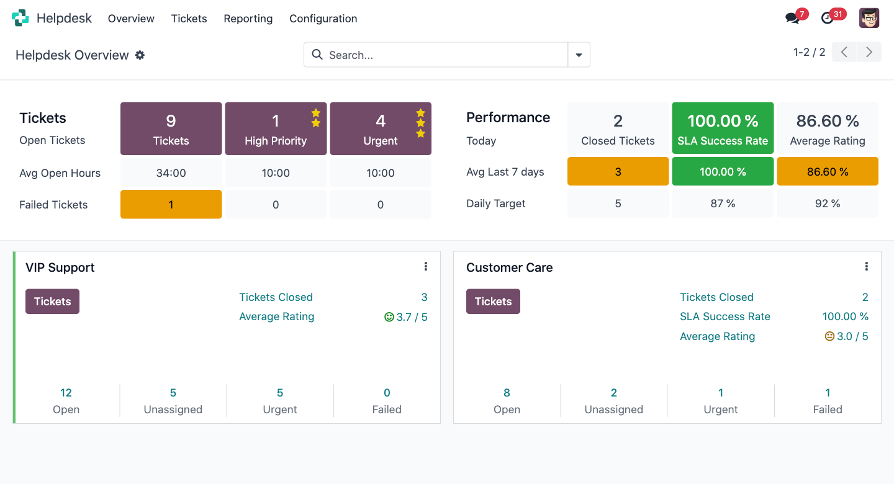
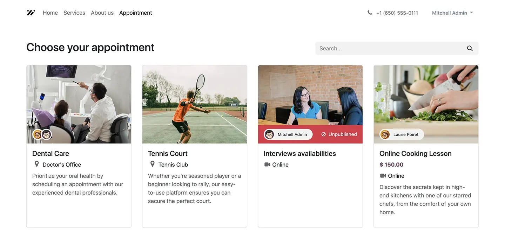

Les Services avec Odoo
Gestion de Projet
Pilotez vos projets efficacement avec des outils de suivi avancés, des tableaux de bord personnalisables et une vue d'ensemble claire de vos activités...

Feuille de Temps
Suivez et gérez le temps passé sur chaque projet avec précision, facilitez la facturation et optimisez l'allocation des ressources...

Services sur Site
Gérez efficacement vos interventions sur site, planifiez vos techniciens et assurez un suivi détaillé des prestations...

Assistance
Offrez un support client de qualité avec un système de tickets performant et un suivi en temps réel des demandes...

Planification
Optimisez la planification de vos ressources et de vos équipes avec des outils visuels intuitifs...

Rendez-vous
Gérez facilement vos rendez-vous clients avec un système de réservation en ligne intégré et des rappels automatiques...
